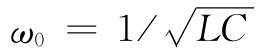

尽管我们已经描述的共振腔似乎与通常含有电感和电容的那种共振电路很不相同，但这两种共振系统还是很紧密地联系着的。它们都是同一家庭的成员，恰好就是电磁共振的两个极端情况——有许多中间情况介乎这两个极端之间。假设我们通过考虑一个电容与一个电感并联的共振电路开始，如图23-16（a）所示。这一电路将在 的频率发生共振。如果我们希望提高这一电路的共振频率，可通过降低电感L而做到。一种办法是，减少线圈中的匝数。但是，在这方面我们只能走到这一步，即最后将达到只有一匝，就是连接电容器的顶板和底板间的那一根导线。本来还可以通过降低电容而把共振频率提得更高，然而，我们可以通过把几个电感并联而继续降低这个电感。当两个单匝电感并联时就只有每匝电感的一半。所以当电感已减至仅有一匝时，我们仍可通过添加其他一些连接电容器的顶板与底板间的单个回路来继续提高共振频率。例如，图23-16（b）表明电容器两板之间是由六个这样的“单匝电感”连接的。如果继续增加许许多多这种导线段，则可能会过渡到一个完全封闭了的共振系统，如图23-16（c）所示，那是一个柱形对称物体的截面。现在我们的电感是一个连接至电容器两板边缘的柱形空罐，电场和磁场显示在该图中。当然，这样的物体就是一个共振腔，被叫作“加感”空腔，但我们仍可以把它看作为一个LC电路，即其中电容部分是我们能够在那里找到大多数电场的地方，而电感部分则是能找到大多数磁场的地方。
图23-16 共振频率逐渐提高的各种共振器
如果要进一步提高图23-16（c）的共振器频率，还可以通过继续降低电感L而做到。为此，就必须减小该电感部分的几何尺寸，比方说缩小图中的高度h。当h缩小时，共振频率将会提高。当然最后将会达到其中高度h刚好等于电容器两板之间的间距。此时，我们就刚好有一个柱形盒，共振电路变成图23-7所示的空腔共振器。
你将会注意到，在图23-16中原来的LC共振电路中，电场和磁场分得很开。当逐渐把共振系统修改以便使其频率逐步提高时，磁场就会越来越靠近电场，直到两者在空腔共振器中完全混合。
尽管在这一章中，我们曾谈过的空腔共振器都是柱形盒子，但圆柱这个形状却没有什么神秘之处。任一种形状的盒子都会有对应于电场和磁场的各种可能振动模式的共振频率。例如，图23-17所示的那个“空腔”就会有它自己特定的一组共振频率——虽则要把它算出来是相当困难的。
图23-17 另一种共振空腔